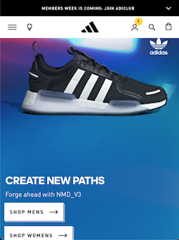
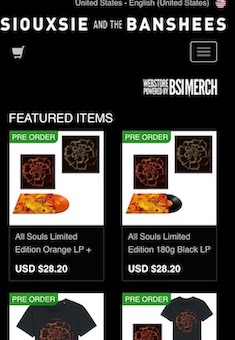

Design Principles Document
Alex Holloway
Proximity
H&M
h&m.comThis page utilizes a lot of space betweent the different icons which gives it a sense of depth and cleanliness, as well as simplicity. The lack of clutter gives a sense of conciseness
Alignment
Adidas
adidas.com
This page utilizes a nice horitzontal alignment on their engagement options that is pleasing to the eye. The main brand is centered well on the page, and the cart, search and personal profile options are right aligned with the main menu option and location options aligned to the left.
Contrast
Siouxsie and the Banshees
siouxsieandthebanshees.com
This page uses exclusive black and white coloring and thusly gives stark contrast to their logo and the different engagement options available to the viewer. This helps reduce confusion and has an elegant appearance.